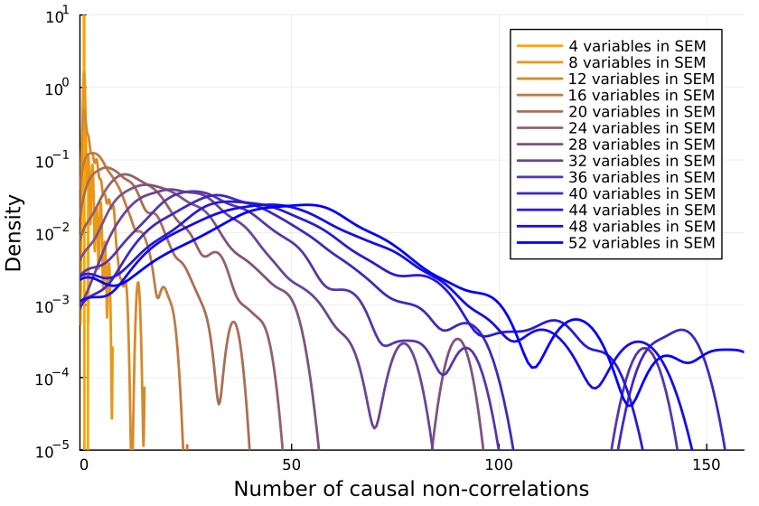

author: niplav, created: 2022-02-04, modified: 2024-04-06, language: english, status: in progress, importance: 4, confidence: unlikely
Absence of correlation almost never implies absence of causation55%.
"Correlation ⇏ Causation" is trite by now. And we also know that the contrapositive is false too: "¬Correlation ⇏ ¬Causation".
Spencer Greenberg summarizes:
All of this being said, while causation does not NECESSARILY imply correlation, causation USUALLY DOES imply correlation. Some software that attempts to discover causation in observational data even goes so far as to make this assumption of causation implying correlation.
I, however, have an inner computer scientist.
And he demands answers.
He will not rest until he knows how often ¬Correlation ⇒ ¬Causation, and how often it doesn't.

This can be tested by creating a Monte-Carlo
simulation
over random linear structural equation
models
with $n$ variables, computing the correlations between the different
variables for random inputs, and checking whether the correlations being
zero implies that there is no causation.
So we start by generating a random linear SEM with $n$ variables (code
in Julia). The
parameters are normally
distributed with
mean 0 and variance 1.
function generate_random_linear_sem(n::Int)
g = DiGraph(n)
for i in 1:n
for j in (i+1):n
if rand() < 0.5
add_edge!(g, i, j)
end
end
end
coefficients = Dict()
for edge in edges(g)
coefficients[edge] = randn()
end
return g, coefficients
end
We can then run a bunch of inputs through that model, and compute their correlations:
function correlation_in_sem(sem::DiGraph, coefficients::Dict, inner_samples::Int)
n = size(vertices(sem), 1)
input_nodes = [node for node in vertices(sem) if indegree(sem, node) == 0]
results = Matrix{Float64}(undef, inner_samples, n) # Preallocate results matrix
for i in 1:inner_samples
input_values = Dict([node => randn() for node in input_nodes])
sem_values=calculate_sem_values(sem, coefficients, input_values)
sem_value_row = reshape(collect(values(sort(sem_values))), 1, :)
results[i, :] = sem_value_row
end
correlations=cor(results)
for i in 1:size(correlations, 1)
correlations[i, i] = 0
end
return abs.(correlations)
end
We can then check how many correlations are "incorrectly small".
Let's take all the correlations between variables which don't have any causal relationship. The largest of those is the "largest uncaused correlation". Correlations between two variables which cause each other but are smaller than the largest uncaused correlation are "too small": There is a causation but it's not detected.
We return the amount of those:
function misclassifications(sem::DiGraph, coefficients::Dict, inner_samples::Int)
correlations=correlation_in_sem(sem, coefficients, inner_samples)
influence=Matrix(Bool.(transpose(adjacency_matrix(sem))))
not_influence=tril(.!(influence), -1)
non_causal_correlations=not_influence.*correlations
causal_correlations=influence.*correlations
return sum((causal_correlations .!= 0) .& (causal_correlations .< maximum(non_causal_correlations)))
end
And, in the outermost loop, we compute the number of misclassifications for a number of linear SEMs:
function misclassified_absence_mc(n::Int, outer_samples::Int, inner_samples::Int)
return [misclassifications(generate_random_linear_sem(n)..., inner_samples) for i in 2:outer_samples]
end
So we collect a bunch of samples. SEMs with one, two and three variables are ignored because when running the code, they never give me any causal non-correlations. (I'd be interested in seeing examples to the contrary.)
results = Dict{Int, Array{Int, 1}}()
sem_samples=200
inputs_samples=20000
for i in 4:16
results[i]=misclassified_absence_mc(i, sem_samples, inputs_samples)
end
We can now first calculate the mean number of mistaken correlations and the proportion of misclassified correlations, using the formula for the triangular number:
result_means=[mean(values) for (key, values) in sort(results)]
result_props=[mean(values)/((key^2+key)/2) for (key, values) in sort(results)]
So it looks like a growing proportion of causal relationships are not correlational, and I think the number will asymptote to include almost all causal relations55%.
It could also be that the proportion asymptotes to another percentage, but I don't think so15%.
Is the issue with the number of inner samples, are we simply not checking enough? But 10k samples ought to be enough for anybody—if that's not sufficient, I don't know what is.
But let's better go and write some code to check:
more_samples=Dict{Int, Array{Int, 1}}()
samples_test_size=12
sem_samples=100
inputs_samples=2 .^(6:17)
for inputs_sample in inputs_samples
println(inputs_sample)
more_samples[inputs_sample]=misclassified_absence_mc(samples_test_size, sem_samples, inputs_sample)
end
Plotting the number of causal non-correlations reveals that 10k samples ought to be enough, at least for small numbers of variables:

The densities fluctuate, sure, but not so much that I'll throw out the baby with the bathwater. If I was a better person, I'd make a statistical test here, but alas, I am not.